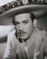
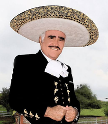

La música en México ha influido profundamente en la construcción de la identidad nacional, funcionando como un reflejo directo de su historia, sus luchas y el mestizaje cultural. Desde los ritmos tradicionales hasta los géneros modernos, las composiciones de los autores de nuestro país sirven para preservar tradiciones y narrar la vida cotidiana de las distintas épocas. Por esta razón, la expresión musical es considerada uno de los pilares fundamentales de la cultura de México, unificando al pueblo y llevando su riqueza artística ante los ojos del mundo entero.
| Década | Artistas Musicales Dominantes |
|---|---|
| Años 1970 | José José, Los Tigres del Norte, Los Bukis |
| Años 1980 | José José, Juan Gabriel, Vicente Fernández |
| Años 1990 | Luis Miguel, Maná, Cristian Castro |
| Años 2000 | Reik, Belanova, Julieta Venegas |
| Años 2010 | Los Ángeles Azules, Banda MS, Natalia Lafourcade |
| Años 2020 (Actualidad) | Peso Pluma, Christian Nodal, Carín León |
¿Qué tal si eres tú?
El Noa Noa
Mucho Corazón
Yo quisiera
A lo mejor
Bebé dame
José José

Pedro Infante

Vicente Fernández
Luis Miguel